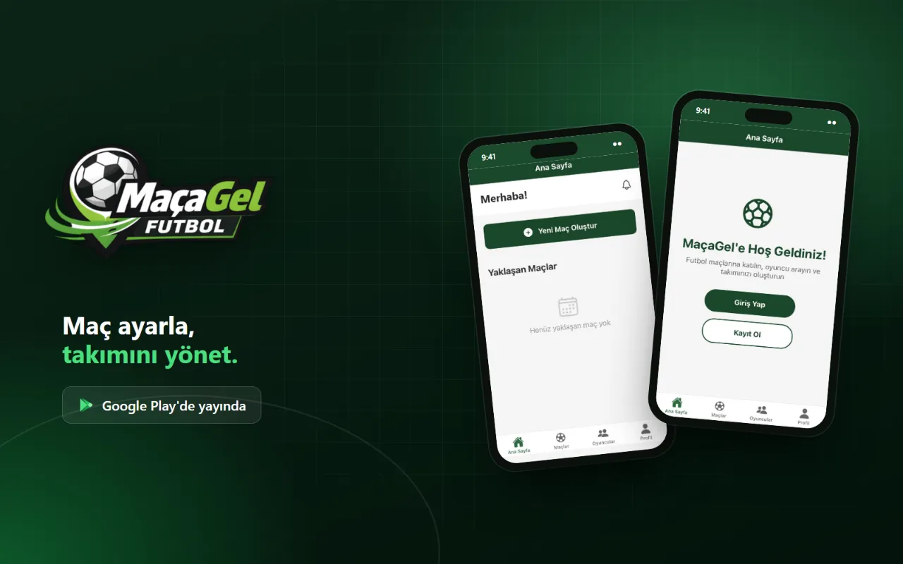
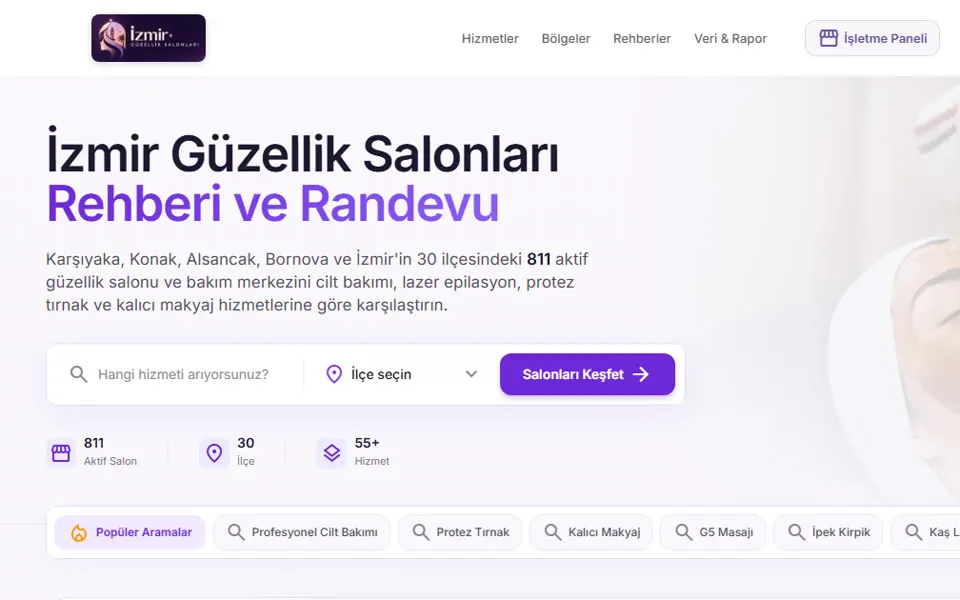
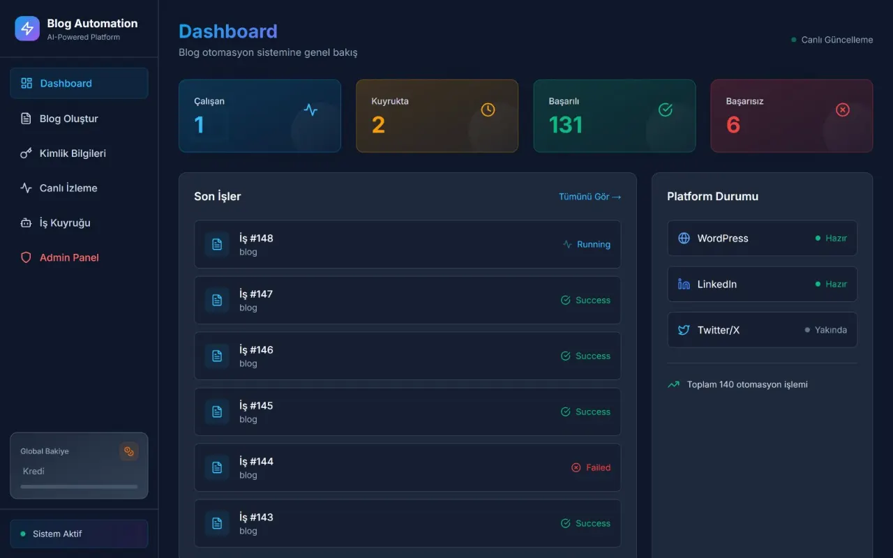
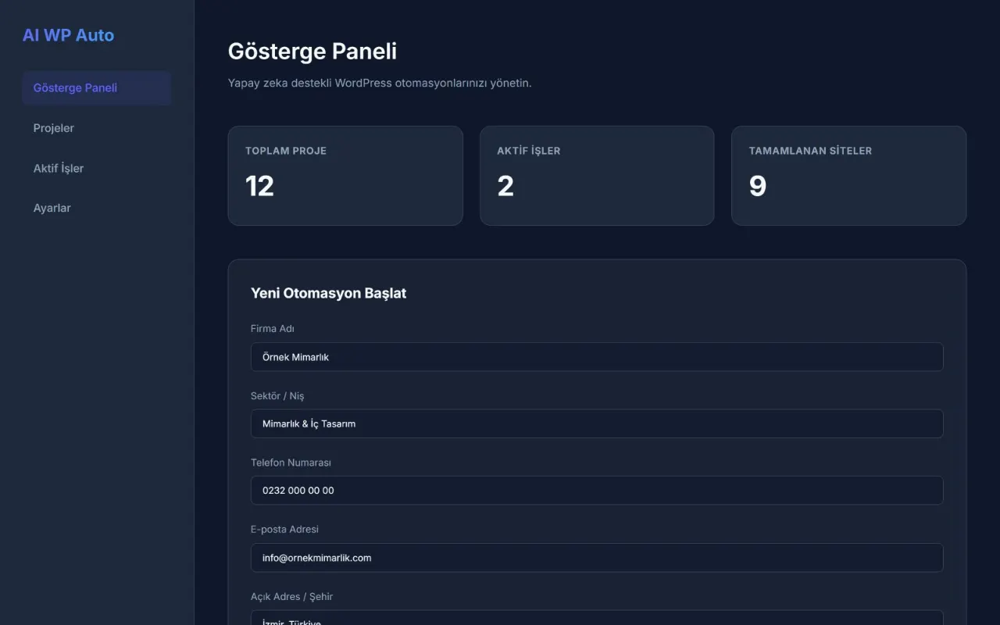
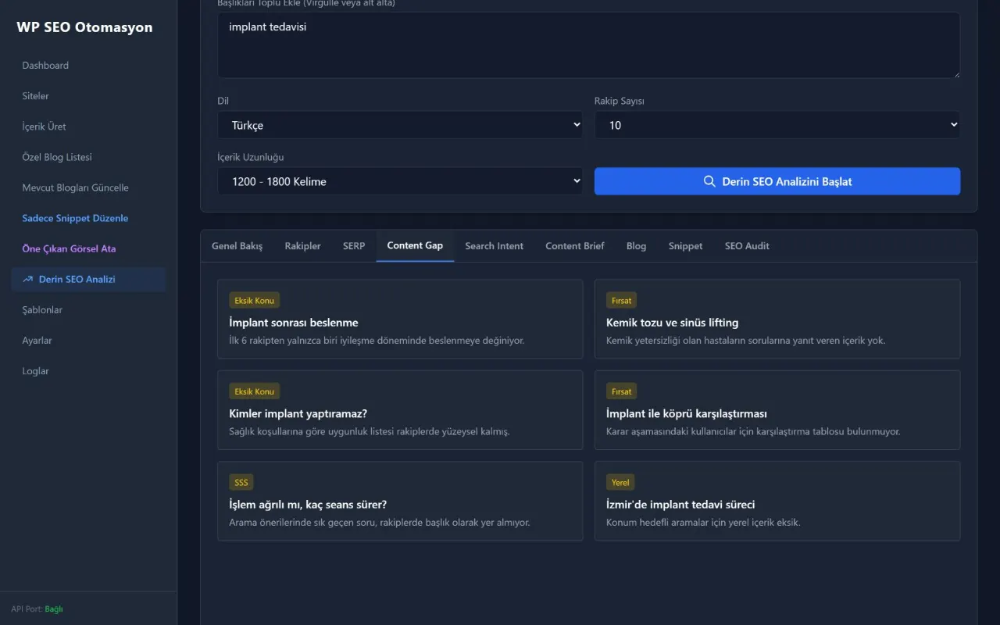
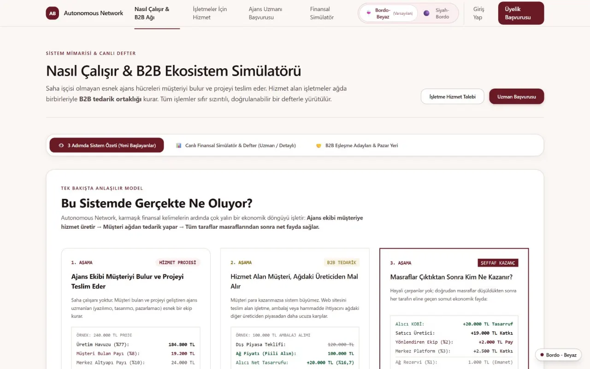
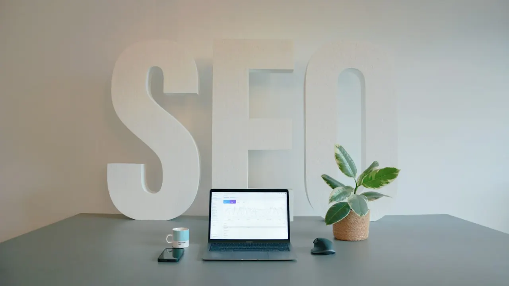
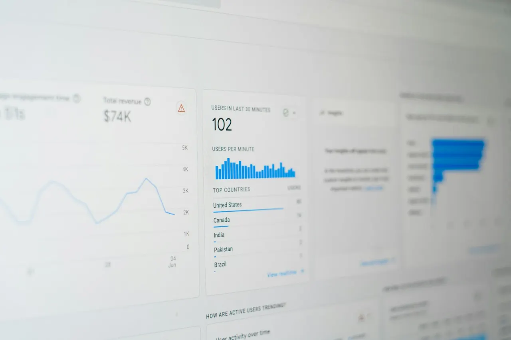
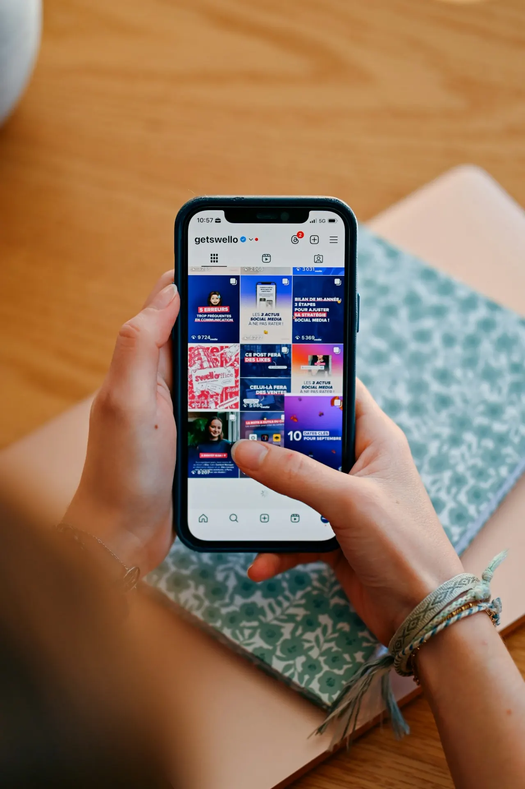

Sayfa yapısını, içeriği ve düzeni WordPress üzerinde kuruyor; yayındaki siteleri güncel tutuyorum.

Kurumsal, modern ve kullanıcı dostu sayfalar; renk, yazı ve düzen baştan sona tutarlı.
Google Play'de yayında olan mobil uygulamam, ajans döneminde tasarladığım web sitesi ve tekrar eden işleri yazılımla çözen dört otomasyon projesi. Ayrıntılar için kartlara tıklayabilirsiniz.
Tüm projeler
01Mobil uygulamaMaçaGel FutbolArkadaşlarınla ve çevrendeki oyuncularla maç ayarlama, takım kurma uygulaması. Google Play'de yayında.Google Play'de aç
02Web sitesiİzmir Güzellik Salonları800'ü aşkın salonu listeleyen rehber ve randevu platformu.Siteyi aç
03Full-stackAI Blog İçerik ve Dağıtım PlatformuYapay zekâ ile yazar, birden fazla WordPress sitesinde yayınlar.Nasıl çalışır?
04Python · AIAI WordPress Site KurucuFirma bilgisi ve logodan Elementor sayfaları üretir.Nasıl çalışır?
05C# · .NET 8Deep SEO ve Snippet OtomasyonuRakipleri analiz eder, eksik içeriği ve meta verileri yazar.Nasıl çalışır?
06Next.jsİş Ağı Yönetim PlatformuDoğru ekibi önerir, geliri kuruşu kuruşuna paylaştırır.Nasıl çalışır?İki yıllık ajans deneyimim boyunca WordPress tabanlı kurumsal ve hizmet odaklı web sitelerinin tasarımında görev aldım. Sayfa yapılarını hazırladım, içerikleri düzenledim; masaüstü, tablet ve mobil görünümleri ayrı ayrı kontrol ettim. Bunun yanında SEO, Google Ads, sosyal medya ve grafik tasarım işlerinde de çalıştım.
WordPress ve web tasarım işimin merkezinde. SEO, reklam, mobil uyum ve grafik tasarım ise bir sitenin yayından sonra da işe yaramasını sağlıyor.
Sayfa yapısını, içeriği ve düzeni WordPress üzerinde kuruyor; yayındaki siteleri güncel tutuyorum.
Kurumsal, modern ve kullanıcı dostu sayfalar; renk, yazı ve düzen baştan sona tutarlı.

Masaüstü, tablet ve mobil görünümü ayrı ayrı kontrol edip düzenliyorum.

Sayfa başlıkları, açıklamalar ve site yapısında arama görünürlüğü düzenlemeleri.

Kampanya kurulumu, anahtar kelime seçimi ve reklam metinleri.

Gönderi, banner ve site görselleri; sosyal medya içerik planı.
Her projede aynı dört adımı izliyorum. Böylece neyin ne zaman hazır olacağı baştan belli oluyor.
Sayfaların iskeletini, bölümlerini ve menü yapısını oluşturuyorum.
Renk, yazı ve görselleri WordPress üzerinde sayfaya işliyorum.
Tablet ve mobil görünümü tek tek kontrol edip ayarlıyorum.
Siteyi yayına alıyor, sonradan gelen revizyonları uyguluyorum.
WordPress sitelerinden Google Ads kampanyalarına, sosyal medya içeriklerinden grafik tasarıma kadar farklı sektörlerden müşterilerle çalıştım.
Web Tasarım Ajansı, İzmir
Bir web tasarım ajansında veya dijital ekipte, yeni projelerde sorumluluk almaya hazırım.